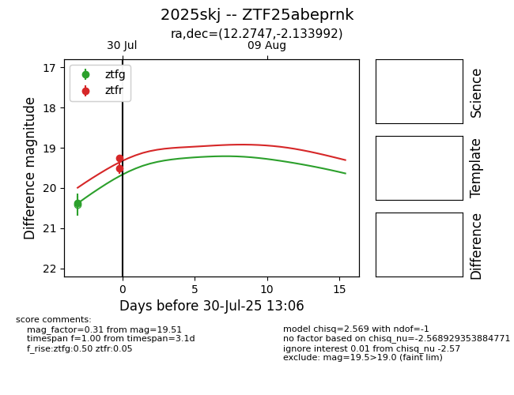

Target 2025skj at 2025-08-19 18:04, see:
FINK: fink-portal.org/ZTF25abeprnk
Lasair: lasair-ztf.lsst.ac.uk/objects/ZTF25abeprnk
ALeRCE: alerce.online/object/ZTF25abeprnk
TNS: wis-tns.org/object/2025skj
YSE: ziggy.ucolick.org/yse/transient_detail/2025skj
alt names
ZTF25abeprnk (ztf,fink)
2025skj (tns,yse)
ATLAS25iyc (atlas)
PS25giq (panstarrs)
coordinates:
equatorial (ra, dec) = (12.2747,-2.13399)
galactic (l, b) = (121.5490,-64.99946)
photometry
last atlasc=19.05, atlaso=18.97, ztfg=19.31, ztfr=19.10
1 atlasc, 3 atlaso, 26 ztfg, 21 ztfr detections
